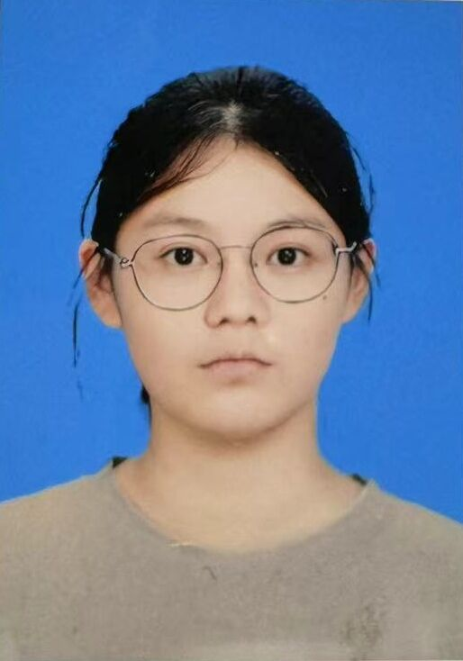
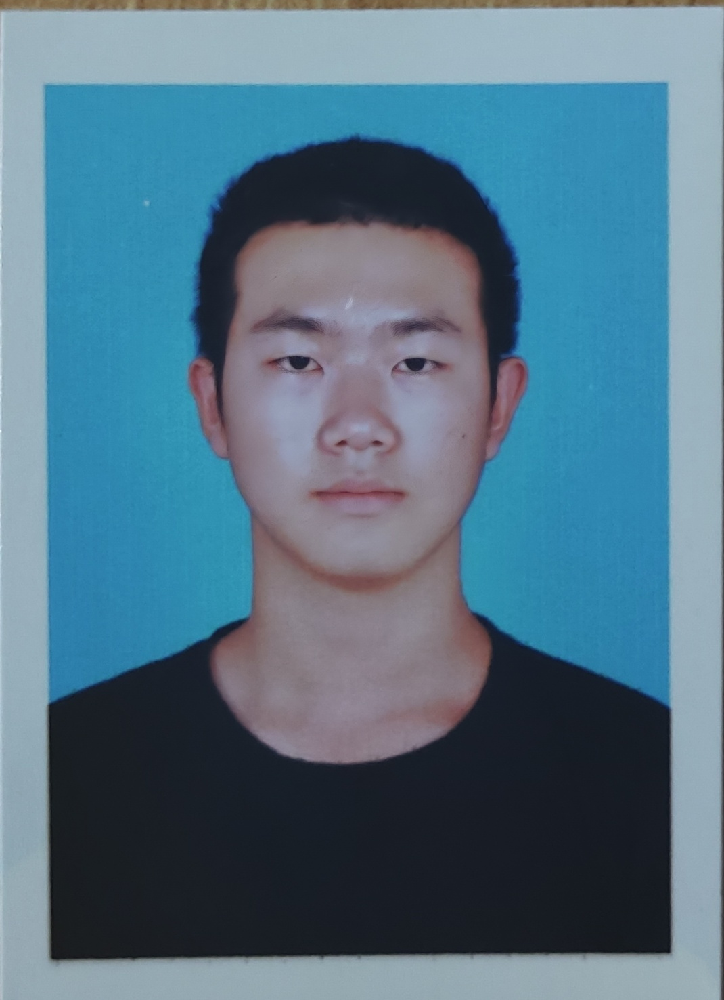
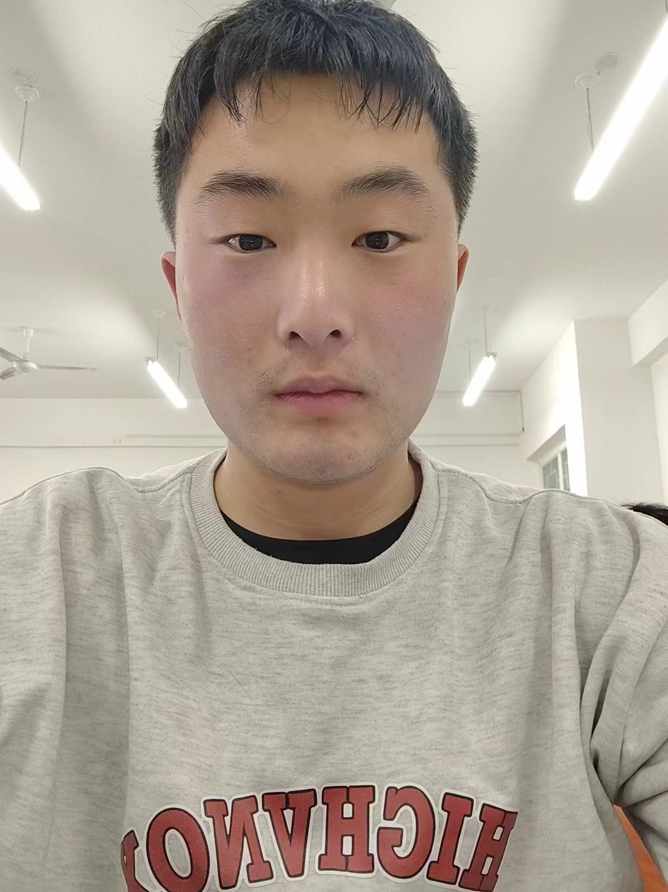

|
盛国瑞 工学博士，博士毕业于南开大学。 现就职于鲁东大学信息与电气工程学院 |
|
|
杨延村 管理学博士，本科、研究生毕业于山东大学。 现任鲁东大学信息与电气工程学院讲师 |

硕士研究生
| 宋静茹 | 曹品丹 |
| 王鑫龙 | 王峻松 | 张世杰 | 刘承汿 |
 |
|
| 孙庆硕 | 朱相颐 |
本科生
| 朱鹏昊 | 田平安 | 许亮 | 杨玉学 |
| 孙锦杰 | 成建华 | 谷慧杰 | 安涛 |
| 刘慧 | 饶全瑞 | 张潇 | 张云威 |
|  |  |
 |
|
| 阮心如 | 高鑫 | 吕冰倩 | 付统宇 |
| 张文莉 | 祝书璇 | 盛瑛楠 | 王江南 |
|  |  |
||
| 郭庆涛 | 韩秋志 | 孟浩文 | 朴志强 |
 |
 |
 |
 |
| 万雯玲 | 李熠辉 | 钱成越 | 王商梓涵 |
|  |  |
||
| 吕聪睿 | 姚方圆 | 陈兴昊 |